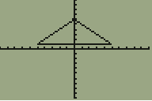

or can you...
on most, if not all TI-brand calculators, there is a button labeled "TEST".
the menu contains comparators such as < and >, but it also has a LOGIC tab.
this gives you access to conditional operators, like and and or.
since these will either return 1 (true) or 0 (false), they can cut off lines at certain points.
X>-5 and X<5(-5, 1) to (5, 1).0 (false), nothing will happen.(X>-5 and X<5)5(X>-5 and X<0)(X+5)(X>-5 and X<0)(X+5)+(X>-5 and X<0)(X>-5 and X<0)(X+5)+(X>-5 and X<0)2Y1=(X>1 and X<1.25)
Y2=(X>1 and X<1.25)1.25
Y3=(X>1 and X<1.25)1.5
Y4=(X>1 and X<1.25)1.75
Y5=(X>1 and X<1.25)2
Y6=(X>1 and X<1.25)2.25
Y7=(X>1 and X<1.25)2.5
Y8=(X>1 and X<1.25)2.75
Y9=(X>1 and X<1.25)3
(0.25 is the default margin of each marker)
putting a horizontal line and 2 diagonal lines together will make a triangle. simple as that.
Y1=(X>-5 and X<5)
Y2=(X>-5 and X<0)(X+5)+(X>-5 and X<0)
Y3=(X>0 and X<5)(-X+5)+(X>0 and X<5)
